Tu liczy się smak – prawdziwe, cienkie
ciasto, domowy sos i składniki, które
kochamy. Nasza pizza to nie fast food.
To ciepło z pieca, zapach ziół
i chrupiące brzegi, które uzależniają.
Wpadnij do nas – będzie pysznie!
Pizza robiona z pasji.
Prawdziwe rzemieślnicze dzieło
najlepszej Kieleckiej pizzeri.
Poznaj staropolską Kielecką pizzerie
która zdobyła serca polskiej ludności
a nawet zagranicznych turystów.
Rodzinna pasja do robienia pizzy która była
w rodzinie od pokoleń przemieniła się w
pierwszy rodzinny biznes. Na początku
naszymi głównymi klientami była rodzina,
sąsiedzi i przyjaciele, lecz z czasem
przychodziło więcej nowych ludzi.
W 1979 roku dostaliśmy nagrodę za
Najlepszą Pizzerie w Kielcach.
Pierwszy kryzys
Na początku lat 90 nasz lokal przechodził
kryzys pieniężny. Przez ponad 5 lat był
remont ulicy Piekoszowskiej na której się
znajdował nasz lokal przez przeniesieniem.
Remont był ogromny przez co dojście do
naszej pizzeri było niemal niemożliwe, a
ceny prądu, składników i eksplatacji wzrosły,
ledwo wiązaliśmy koniec z końcem.
Legendarny powrót
Po ukończeniu remontu nasz lokal został
nagłośniony przez lokalną prasę. Dostaliśmy
również dotację od miasta za utrudnioną
pracę. Dzięki tej dotacji kupiliśmy plakaty
reklamowe oraz zmodernizowaliśmy nasz
lokal.
W latach 1986, 1988, 1990 i 2011 wygraliśmy
po raz kolejny nagrodę za Najlepszą Pizzerie
w Kielcach. Zostaliśmy nawet nominowani
w kategori Najlepsza Pizzeria w Polsce.
Obecnie
Nasz powrót wygenerował wielki przychód
dzięki czemu przenieśliśmy się w bardziej
przytulne, lepiej dostępne miejsce które jest
odwiedzane codziennie przez tysiące
mieszkańców i turystów.
Nasza pizzeria jest przez długi czas
najchętniej wybieraną a nasz lokal jest
przepięknie urządzony, jednocześnie
zapewniając ten sam pyszny smak z lat 80.
Carterrina to nie zwykła pizzeria, to prawdziwa pasja i miłość do pizzy przeobrażana w faktyczne dzieło rzemielśnicze dostępne dla każdego człowieka chcącego posmakować prawdziwej pizzy polsko-włoskiej ze złotych czasów.Carterrina
10 profesjonalnych kucharzy
w naszej placówce
4.7/5
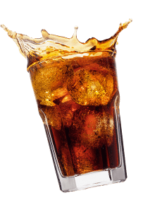
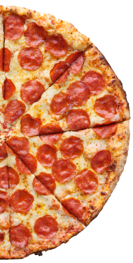
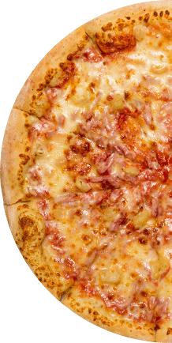
/* Sekcja Menu */
zobacz nasze ...MENU
Staramy się by nasz lokal podążał za najnowszymi trendami, jednocześnie
trzymając przy sobie klasykę kuchni włoskiej i polskiej.
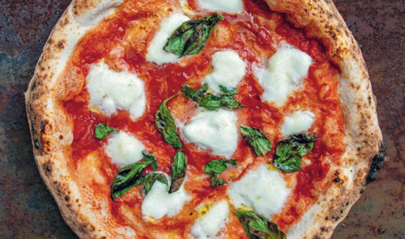
Margherita
Klasyczna chrupiąca pizza z serem i sosem pomidorowym.
Poczuj smak dawnych Polskich lat i starowłosko-polskiej
kuchni.
18.00 zł30cm
33.00 zł45cm
42.99 zł60cm
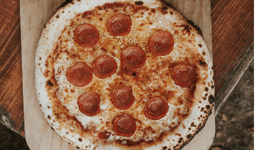
Pepperoni
Soczyste plasterki pepperoni, które przyjemnie chrupią na
brzegach - coś dla fanów konkretnego uderzenia smaku.
24.00 zł30cm
37.00 zł45cm
46.00 zł60cm
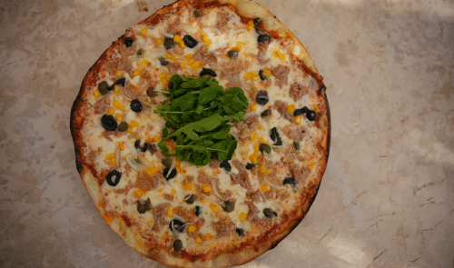
Capricciosa
Bogata i zbalansowana - trochę warzyw, trochę miesa,
wszystko idealnie się uzupełnia.
24.00 zł30cm
37.00 zł45cm
46.00 zł60cm
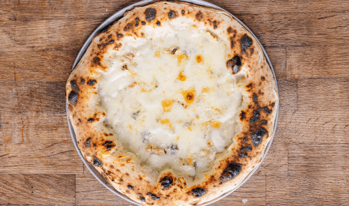
Quattro Formaggi
Dla serowych freaków - kremowa, aromatyczna, głęboka.
Rozpływa się w ustach.
25.00 zł30cm
38.00 zł45cm
46.99 zł60cm
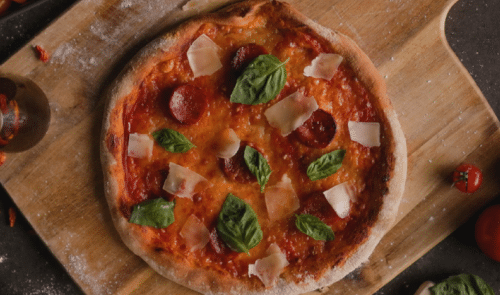
Diavola
Ostra jak twoja była. Kiedy chcesz pizzy z charakterem - to jest
Twój wybór.
25.00 zł30cm
40.00 zł45cm
49.00 zł60cm
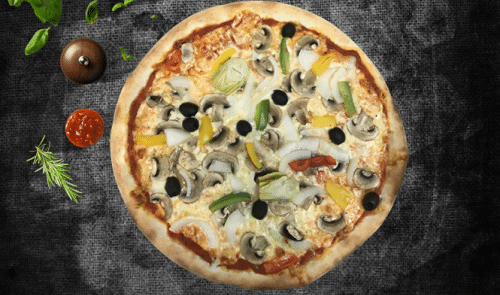
Vegetariana
Kolorowo, lekko i warzywnie - świetna opcja na bezmięsny, ale
sycący obiad.
18.00 zł30cm
30.00 zł45cm
40.00 zł60cm
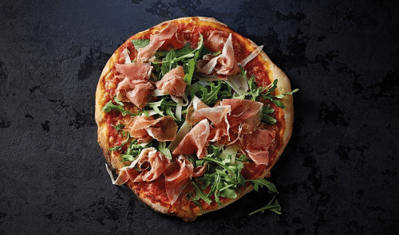
Prosciutto e Rucola
Klasyka włoskiego stylu - chrupiace ciasto, słona szynka i
świeżość rukoli. Elegancka, ale konkretna.
26.00 zł30cm
38.00 zł45cm
49.99 zł60cm
Hawajska
Dla tych, co lubią słodko-słone połaczenia - kontrowersyjna, ale
kochana.
21.00 zł30cm
35.00 zł45cm
47.99 zł60cm
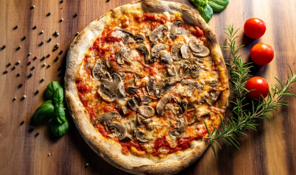
Funghi
Prosto, ale z głębią smaku. Dla fanów grzybów i klasyki.
22.00 zł30cm
36.00 zł45cm
46.00 zł60cm
/* Najchętniej wybierane */
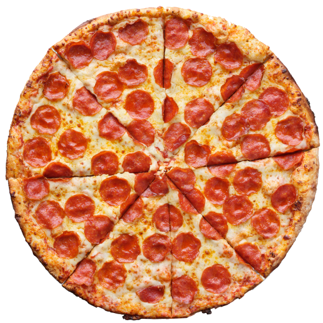
Najchętniej wybierana...Pepperoni
Klasyka włoskiego stylu - chrupiące ciasto,
słona szynka i świeżość rukoli. Elegancka,
ale konkretna.
Na przestrzeni 30 lat dokumentowaliśmy progress naszej placówki. Dzielimy
się z wami zdjęciami żebyście mogli wgłębić się w naszą historię i bardziej
posmakować prawdziwy trud pracy włożony w to wyjątkowe miejsce.
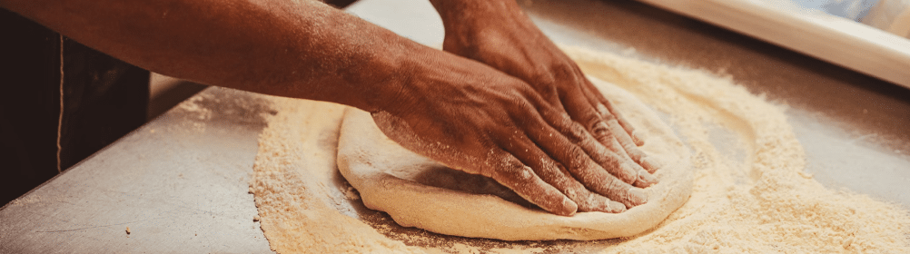
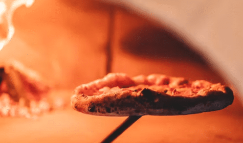
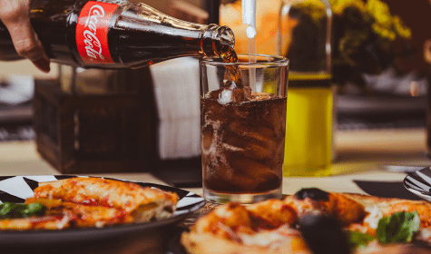
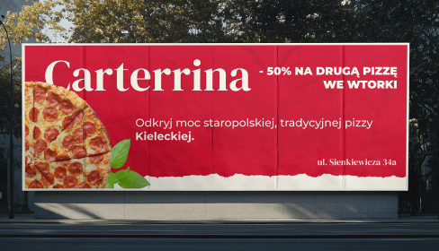
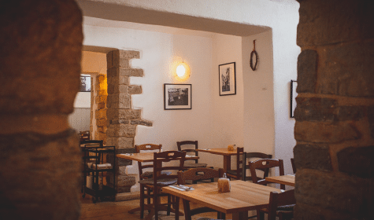
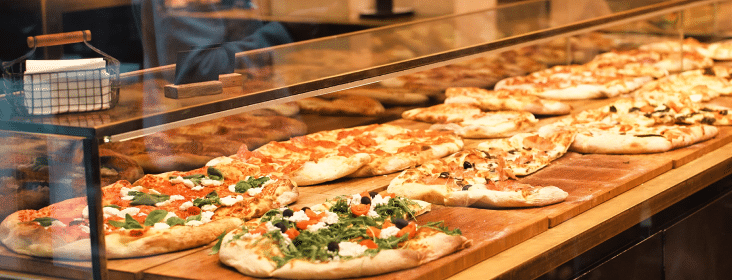
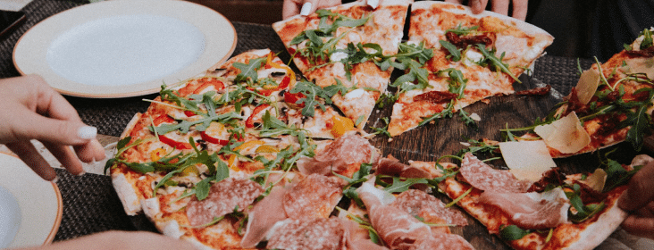
Więcej zdjęć na naszym
Instagramie
/* Sekcja Nasz Lokal */
znajdź nasz ...LOKAL
Nasz lokal znajduję się w kultowym miejscu dla kielczanów. Stara ulica
Sienkiewicza wspiera małe biznesy od setek lat a piękna architektura
upiększa przyjemność z jedzenia naszych dzieł.